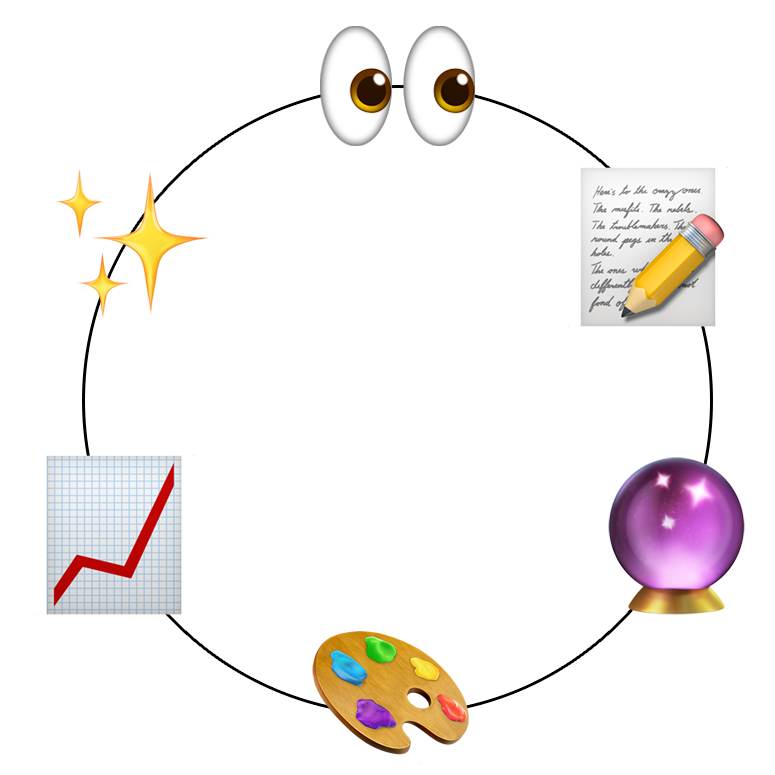

Blair Ellis
I'm the director of product design at Maven Clinic.
I help teams think big by facilitating cross-functional workshops to bring humans from different disciplines together to dream up the products we'll ship to the humans we design for. I believe product development is a creative craft that requires collaboration, open critical hearts and minds, and hard skills. I love working with people that approach their work with big intentions.
Things I've learned along the way:
- Proper research requires looking at a balance of trends in the broader world, the problems your customers have, and at the nuances in our execution.
- Strategic planning within constraints is one of the hardest parts of building and shipping great, usable products.
- Design is a tool not just for creating beauty and delight, but for fulfilling people's needs.
- The power of storytelling and narrative in conveying the impact the products we build will have on people's lives.
- Clear goals, an agenda, and ensuring everyone in the room can partipate is the key to not wasting people's time. Time is precious.
- Working people and the artifacts we leave behind are what make history.
- Much like parenting, the care and patience that goes into supporting people in their everyday work and careers is limitless.
- Much like social activism, good design is the act of bringing people with a variety of perspectives together to figure out how to make change.
In a world that often puts short-term profits before the long-term needs of people and the planet, to be a great designer is one of the most radical jobs you can have. Well executed design is good for profits, for people, and for the planet.
Reach out if you'd like to chat: blairmellis@gmail.com.
